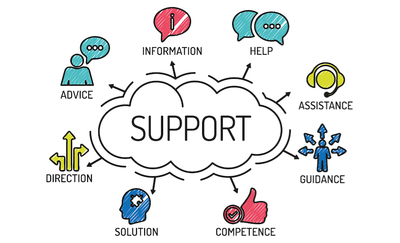

Welcome! We are a group of Berkeley researchers who are trying to understand how to help people who have experienced online harm (e.g., harassment, bullying, etc) to make sense of the situation.
In the following process, we will provide you with a scenario of harm and ask you to complete some tasks according to the scenario. The whole process should take place within 45 minutes. We will ask some follow-up questions afterwards.
